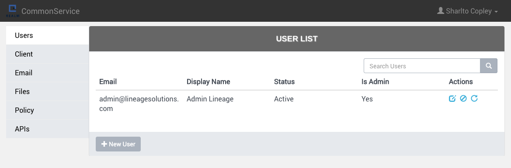
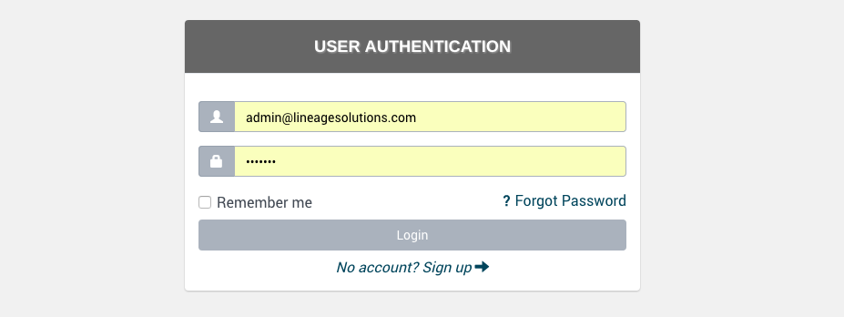

议程:
- 什么是MEAN
- MEAN.JS的主要特色
- 我们在项目中如何实践MEAN.JS
- MEAN.JS相关学习资料
关于我：党建
www.dang-jian.com
- 2000年~2007年：西安电子科技大学，硕士学历，人工智能。
- 2007年~2014年：葡萄城信息技术有限公司，程序员，架构师。
- 2014年~今：西安瑞木信息技术有限公司，架构师，合伙人，负责公司技术培训，团队建设。
- dangjian@github
- dangjian@weibo
- hunterdang@gmail.com
送书

什么是MEAN技术栈
其他已知的技术栈

- LAMP: Linux, Apache, Php, MySQL
- MS.Net: IIS, C#, ASP.Net, SQL Server
- Java: Tomcat, Java, JSP, Oracle
MEAN技术栈
MEAN技术栈
- MongoDB - 数据库
- Express - Web应用框架
- AngularJS - Web前端框架
- Node.js - 服务端运行环境
MEAN技术栈

MEAN技术栈
都是我们熟悉的技术，这很前端~

目前流行的两个MEAN实践方案
MEAN.IO VS MEAN.JS
- MEAN.JS: https://github.com/meanjs/mean
- MEAN.IO: https://github.com/linnovate/mean
MEAN.IO VS MEAN.JS
- 出自同一个开发者之手，各种原因分道扬镳。具体原因
- 本质上是一样的：MongoDB，Express，AngularJS，Node.js
- 共同点：jQuery, Bootstrap, swig, mongoose, passport, karma和mocha, nodemon
- 项目新建的方式不同：MEAN.IO使用内置命令行工具mean；MEAN.JS使用Yeoman
- 模块组织方式不同：MEAN.IO使用了node包管理方式，MEAN.JS使用的是前端模块管理方式
- 项目构建的方式不同：MEAN.IO使用gulp，MEAN.JS使用了grunt和gulp
- MEAN.js更开放，文档更完善一些
OK，看代码
我们为什么要使用MEAN
- 一种语言编写前后端逻辑，相同的语法和规范
- 项目的扩展性好，便于团队协作
- 项目结构清晰，容易上手
- 社区活跃，可用资源多
我们在项目中是如何实践MEAN的
- 使用MEAN.JS作为基础架构构建了共通的后台管理和Web客户端
- 去掉了gulp，使用grunt；去掉了sass，只用less
- 使用dotenv管理环境变量
- 使用csurf，helmet提高站点安全
- 使用winston记录log
- 公共资源迁移到public文件夹
- 修改了项目构建资源打包方式
- 添加了项目常用到的模块：用户管理与认证，邮件系统，文件系统
OK，再次看代码
Common Service
Common Web
具体实践中的体会
- 统一的开发方式，项目组开发人员很容易跨项目调动
- 结构清晰，新加入模块在独立的文件夹下，不会造成代码干扰
- 公共资源丰富，MEAN.JS和MEAN.IO更新频繁，不断有成熟方案可以用在项目中